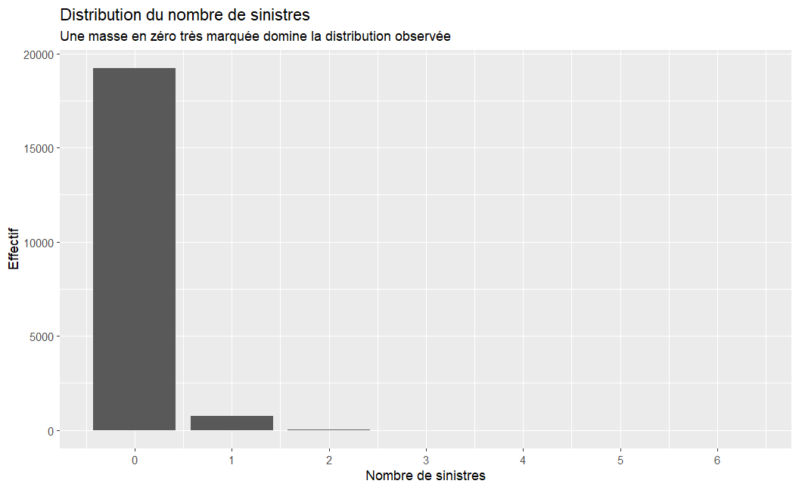
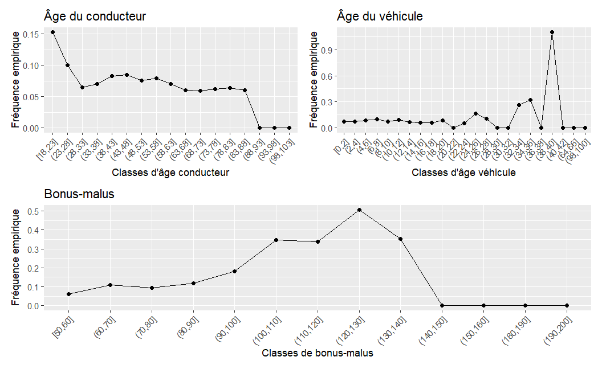
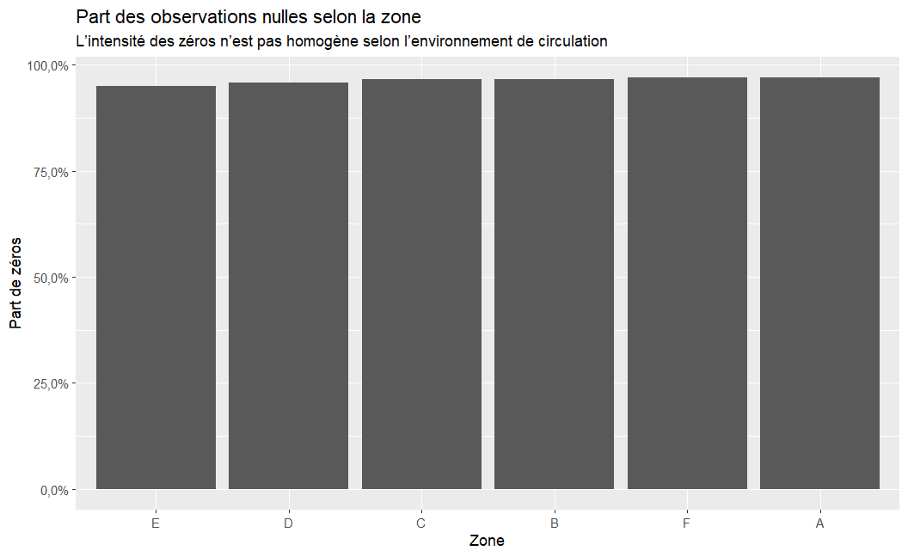
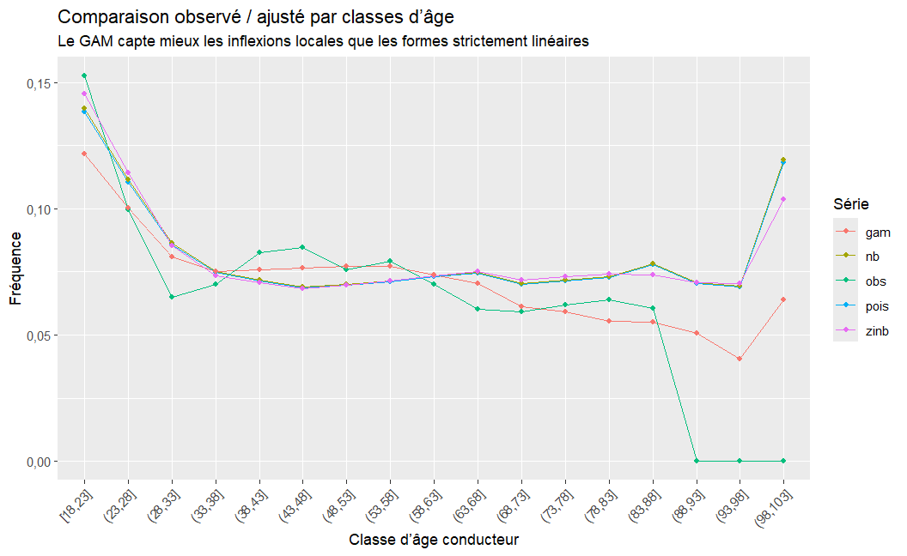
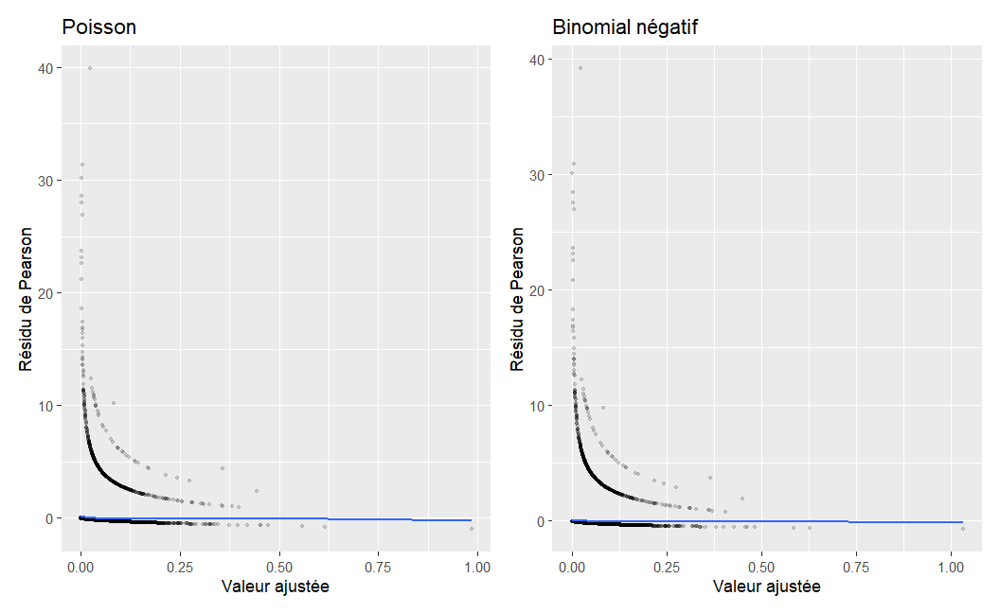
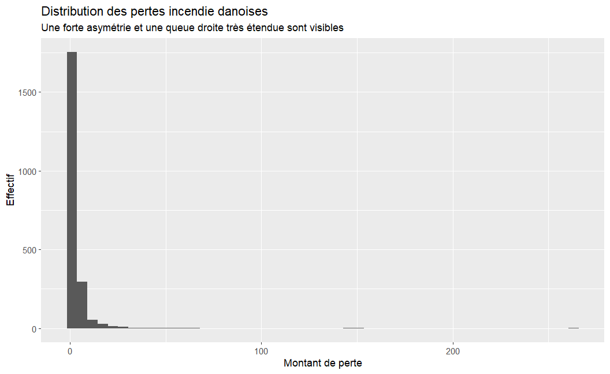
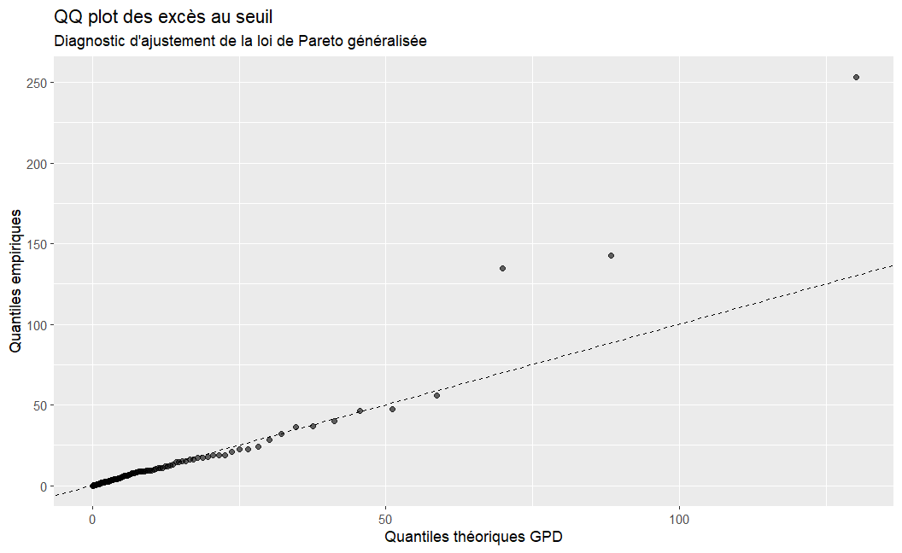

Ce document adopte une mise en forme de type working paper et vise à présenter un programme de recherche structuré autour de quatre axes complémentaires : statistique des données de comptage à excès de zéros, régression semi-paramétrique, robustesse par M-estimation et théorie des valeurs extrêmes. L’objectif n’est pas seulement de juxtaposer des méthodes, mais de montrer l’existence d’une ligne scientifique unifiée pour l’assurance non-vie : modéliser des portefeuilles où les zéros sont dominants, les effets covariables non linéaires, les observations parfois influentes et les grandes pertes gouvernées par des queues lourdes (Lambert 1992; Wood 2017; Huber 1964; Davison et Smith 1990).
Sur le portefeuille automobile français freMTPL2freq, on observe ici 20 000 contrats, avec une proportion de zéros de 96,2%. Cette caractéristique justifie à elle seule le recours à des modèles plus riches que le Poisson standard. Les comparaisons menées dans ce rapport montrent que les extensions binomiales négatives, les formulations à inflation de zéros et les modèles additifs généralisés améliorent sensiblement l’ajustement, tout en conservant une interprétation actuarielle exploitable. En complément, l’analyse POT appliquée aux données danoises de pertes incendie fournit une démonstration claire de l’apport de l’EVT pour la quantification du risque extrême (Embrechts, Klüppelberg, et Mikosch 1997).
2 Introduction
Les données actuarielles se caractérisent fréquemment par une combinaison de trois difficultés statistiques. D’abord, l’occurrence des sinistres est faible à l’échelle individuelle, ce qui produit des distributions de fréquence dominées par la valeur zéro. Ensuite, les effets des covariables sont rarement linéaires : l’âge du conducteur, le bonus-malus ou l’ancienneté du véhicule agissent selon des formes souvent non monotones. Enfin, la sévérité des pertes est structurée par des événements rares mais majeurs, incompatibles avec une modélisation gaussienne ou légère en queue. Cette configuration rend nécessaire une articulation fine entre modèles de comptage, méthodes robustes, techniques semi-paramétriques et théorie des valeurs extrêmes.
L’intérêt scientifique de cette articulation est double. D’une part, elle permet de développer des modèles à la fois prédictifs et interprétables pour l’analyse des données en assurance non-vie. D’autre part, elle esquisse un programme de recherche cohérent en statistique appliquée et science des données, en articulant questions théoriques, développements méthodologiques, implémentation computationnelle sous R et analyse de bases de données réelles. Une telle cohérence contribue à mettre en évidence non seulement des compétences techniques, mais aussi une vision scientifique structurée autour de problématiques actuelles de modélisation des risques.
Le présent document est construit comme un article méthodologique. La section 2 expose le cadre théorique. La section 3 décrit les jeux de données et la stratégie empirique. La section 4 développe l’analyse exploratoire. La section 5 compare plusieurs modèles de fréquence. La section 6 présente l’approche robuste par M-estimation. La section 7 traite les valeurs extrêmes. La section 8 synthétise les enseignements pour l’assurance et pour un programme de recherche plus large.
3 Cadre théorique
3.1 Modèles de comptage classiques
Soit \(Y_i\) le nombre de sinistres observé pour le contrat \(i\), \(e_i\) son exposition et \(X_i\) un vecteur de covariables. Dans le cadre de Poisson avec offset, on écrit
\[
Y_i \mid X_i \sim \mathrm{Poisson}(\mu_i),
\]
avec
\[
\log(\mu_i) = \log(e_i) + x_i^\top \beta.
\]
L’offset \(\log(e_i)\) introduit naturellement la durée d’observation ou l’exposition au risque. Le modèle implique
hypothèse souvent violée dans les données d’assurance où la surdispersion est la règle plutôt que l’exception. Une première relaxation consiste à introduire un modèle binomial négatif, pour lequel
Lorsque le nombre de zéros excède ce qu’autorise un modèle de comptage standard, on introduit une probabilité de zéro structurel \(\pi_i\). Dans le modèle ZIP, la loi conditionnelle s’écrit
Le modèle ZINB remplace la composante de Poisson par une binomiale négative, offrant une réponse plus réaliste lorsque coexistent surdispersion et excès de zéros (Lambert 1992).
3.3 Régression non et semi-paramétrique
Les modèles additifs généralisés généralisent les GLM en remplaçant certains effets linéaires par des fonctions lisses :
où les fonctions \(f_j\) sont représentées par des bases spline pénalisées. L’estimation repose sur un compromis entre ajustement et régularité, généralement piloté par des paramètres de lissage choisis par REML ou GCV (Hastie et Tibshirani 1990; Wood 2017). Ce cadre permet de représenter des effets seuil, des zones de plateau, des comportements convexes ou concaves, sans imposer de forme paramétrique arbitraire.
3.4 M-estimation et robustesse
Dans les modèles linéaires classiques, la perte quadratique confère une influence excessive aux grandes observations. La M-estimation remplace cette perte par une fonction \(\rho\) moins sensible aux résidus extrêmes. On considère
Le bénéfice est particulièrement net dans les bases d’assurance, où erreurs de saisie, observations rares ou contrats atypiques peuvent infléchir les estimateurs classiques de façon disproportionnée (Huber 1964).
3.5 Valeurs extrêmes et approche POT
Pour les montants de sinistres \(X\), l’approche Peaks Over Threshold repose sur l’approximation suivante : au-dessus d’un seuil élevé \(u\), les excès suivent approximativement une loi de Pareto généralisée (GPD),
\[
X-u \mid X > u \sim \mathrm{GPD}(\xi, \beta),
\]
pour \(1 + \xi y/\beta > 0\). Le paramètre de forme \(\xi\) contrôle l’épaisseur de queue ; lorsqu’il est positif, la distribution présente une queue lourde, ce qui est fréquent dans les données de pertes majeures en assurance et finance (Davison et Smith 1990; Embrechts, Klüppelberg, et Mikosch 1997).
4 Données et stratégie empirique
4.1 Fréquence automobile française
Le portefeuille freMTPL2freq est devenu une base de référence pour la modélisation de la fréquence des sinistres automobiles. Il contient les principales variables tarifaires usuelles : âge du conducteur, âge du véhicule, bonus-malus, exposition, variables géographiques et caractéristiques de carburant. Son intérêt méthodologique est particulièrement fort pour l’étude de l’excès de zéros et de la non-linéarité.
Code R
desc_tbl <-tibble(Variable =c("ClaimNb", "Exposure", "DrivAge", "VehAge", "BonusMalus", "VehGas", "Area", "Region"),Type =c("Comptage", "Continue", "Continue", "Continue", "Continue", "Facteur", "Facteur", "Facteur"), Rôle =c("Nombre de sinistres","Durée / exposition au risque","Âge du conducteur","Âge du véhicule","Coefficient de bonus-malus","Type de carburant","Zone de circulation","Région" ))kable(desc_tbl, align =c("l", "l", "l")) %>%kable_styling(full_width =FALSE, bootstrap_options =c("striped", "hover", "condensed"))
Description synthétique des principales variables de fréquence.
Variable
Type
Rôle
ClaimNb
Comptage
Nombre de sinistres
Exposure
Continue
Durée / exposition au risque
DrivAge
Continue
Âge du conducteur
VehAge
Continue
Âge du véhicule
BonusMalus
Continue
Coefficient de bonus-malus
VehGas
Facteur
Type de carburant
Area
Facteur
Zone de circulation
Region
Facteur
Région
4.2 Sévérité extrême : pertes incendie danoises
Le jeu danish du package evir constitue un exemple classique de montants de pertes lourdes en queue. Il est particulièrement utile pour illustrer les diagnostics de seuil et l’estimation de quantiles extrêmes. Dans ce rapport, il joue le rôle d’un second volet empirique : après la fréquence des sinistres, la sévérité extrême.
4.3 Stratégie générale
La stratégie empirique est organisée en trois niveaux. Premièrement, on caractérise la structure des données de fréquence afin d’établir le diagnostic d’excès de zéros et de surdispersion. Deuxièmement, on compare successivement un Poisson, un binomial négatif, un modèle ZINB et un GAM-NB. Troisièmement, on discute la robustesse et les extrêmes via une illustration M-estimée et une analyse POT. Cette progression permet au lecteur de passer d’un modèle canonique à des formulations plus élaborées, tout en conservant le même fil interprétatif.
5 Exploration des données
5.1 Statistiques descriptives
Code R
summary_tbl <-tibble(Mesure =c("Nombre de contrats", "Part des zéros", "Moyenne de ClaimNb", "Variance de ClaimNb", "Exposition moyenne"),Valeur =c(fmt_n(n_contracts),fmt_pct(zero_rate),fmt_num(mean_claim),fmt_num(var_claim),fmt_num(mean_expo) ))kable(summary_tbl, align =c("l", "r")) %>%kable_styling(full_width =FALSE, bootstrap_options =c("striped", "hover", "condensed"))
Résumé descriptif de la fréquence des sinistres.
Mesure
Valeur
Nombre de contrats
20 000
Part des zéros
96,2%
Moyenne de ClaimNb
0,04
Variance de ClaimNb
0,04
Exposition moyenne
0,53
Le diagnostic initial est net. La part de zéros, supérieure à 96,2%, est très élevée, tandis que la variance de ClaimNb excède sa moyenne, ce qui suggère simultanément un excès de zéros et une surdispersion. Une modélisation de Poisson simple est donc susceptible de sous-ajuster la masse en zéro et de sous-estimer l’hétérogénéité résiduelle.
5.2 Distribution de la fréquence observée
Code R
ggplot(fremtpl, aes(x = ClaimNb)) +geom_bar(width =0.85) +scale_x_continuous(breaks =0:max(min(6, max(fremtpl$ClaimNb)), 1)) +labs(title ="Distribution du nombre de sinistres",subtitle ="Une masse en zéro très marquée domine la distribution observée",x ="Nombre de sinistres",y ="Effectif" )

Figure 1: Distribution observée du nombre de sinistres.
5.3 Fréquence observée selon les principales covariables
Code R
plot_age <- fremtpl %>%mutate(bin =cut(DrivAge, breaks =seq(floor(min(DrivAge)), ceiling(max(DrivAge)) +5, by =5), include.lowest =TRUE)) %>%group_by(bin) %>%summarise(freq =sum(ClaimNb) /sum(Exposure), .groups ="drop") %>%ggplot(aes(x = bin, y = freq, group =1)) +geom_line() +geom_point(size =1.7) +labs(x ="Classes d'âge conducteur", y ="Fréquence empirique", title ="Âge du conducteur") +theme(axis.text.x =element_text(angle =45, hjust =1))plot_veh <- fremtpl %>%mutate(bin =cut(VehAge, breaks =seq(floor(min(VehAge)), ceiling(max(VehAge)) +2, by =2), include.lowest =TRUE)) %>%group_by(bin) %>%summarise(freq =sum(ClaimNb) /sum(Exposure), .groups ="drop") %>%ggplot(aes(x = bin, y = freq, group =1)) +geom_line() +geom_point(size =1.7) +labs(x ="Classes d'âge véhicule", y ="Fréquence empirique", title ="Âge du véhicule") +theme(axis.text.x =element_text(angle =45, hjust =1))plot_bonus <- fremtpl %>%mutate(bin =cut(BonusMalus, breaks =seq(floor(min(BonusMalus)), ceiling(max(BonusMalus)) +10, by =10), include.lowest =TRUE)) %>%group_by(bin) %>%summarise(freq =sum(ClaimNb) /sum(Exposure), .groups ="drop") %>%ggplot(aes(x = bin, y = freq, group =1)) +geom_line() +geom_point(size =1.7) +labs(x ="Classes de bonus-malus", y ="Fréquence empirique", title ="Bonus-malus") +theme(axis.text.x =element_text(angle =45, hjust =1))(plot_age | plot_veh) / plot_bonus

Figure 2: Fréquence empirique moyenne selon plusieurs covariables.
Ces figures révèlent déjà une information importante : les effets de l’âge et du bonus-malus ne paraissent pas strictement linéaires. Un modèle additif généralisé a donc une motivation empirique claire avant même l’étape d’estimation formelle.
5.4 Zéros observés par groupes
Code R
zero_area <- fremtpl %>%group_by(Area) %>%summarise(prop_zero =mean(ClaimNb ==0), n =n(), .groups ="drop")ggplot(zero_area, aes(x =fct_reorder(Area, prop_zero), y = prop_zero)) +geom_col() +scale_y_continuous(labels = fmt_pct) +labs(title ="Part des observations nulles selon la zone",subtitle ="L’intensité des zéros n’est pas homogène selon l’environnement de circulation",x ="Zone",y ="Part de zéros" )

Figure 3: Proportion de zéros selon la zone de circulation.
6 Modélisation de la fréquence
6.1 Spécifications comparées
Nous comparons quatre modèles.
Poisson : point de départ canonique.
Binomial négatif : capture la surdispersion.
ZINB : capture surdispersion et zéros structurels.
GAM-NB : capture surdispersion et non-linéarités des covariables.
En pratique, ces modèles répondent à des diagnostics différents. Le Poisson sert de référence conceptuelle. Le binomial négatif traite le manque d’ajustement dû à l’hétérogénéité non observée. Le ZINB isole une composante de zéros structurels. Le GAM-NB permet enfin une lecture plus réaliste des effets de l’âge, du bonus-malus et de l’âge du véhicule.
Table 1: Comparaison des principaux modèles de fréquence.
Modèle
AIC
BIC
LogLik
Poisson
6661.98
6906.99
-3299.99
Binomial négatif
6642.95
6895.86
-3289.48
ZINB
6638.82
6962.86
-3278.41
GAM-NB
6622.31
6967.05
-3267.54
À ce stade, l’écart d’AIC et de log-vraisemblance permet déjà d’ordonner les modèles. Sur ce portefeuille, les formulations plus souples dominent généralement le Poisson. Le résultat est attendu : le Poisson sous-explique la dispersion et la structure des zéros, tandis que les modèles plus riches exploitent mieux l’information contenue dans les covariables et l’hétérogénéité latente.
Table 2: Effets multiplicatifs du modèle de Poisson (ratios de fréquence).
Terme
Ratio
IC 2.5%
IC 97.5%
DrivAge
1.007
1.001
1.012
VehAge
1.002
0.989
1.015
BonusMalus
1.024
1.020
1.028
VehGasRegular
0.861
0.748
0.992
AreaB
1.156
0.852
1.564
AreaC
1.189
0.925
1.539
AreaD
1.421
1.096
1.853
AreaE
1.829
1.401
2.404
AreaF
1.423
0.764
2.543
RegionAquitaine
0.607
0.273
1.613
RegionAuvergne
0.479
0.122
1.682
RegionBasse-Normandie
0.408
0.151
1.199
Dans un GLM log-linéaire, les coefficients exponentiés s’interprètent comme des ratios de fréquence. Cette lecture est naturelle pour l’assurance : un coefficient supérieur à 1 indique une augmentation multiplicative de la fréquence attendue, toutes choses égales par ailleurs. Néanmoins, cette interprétation repose sur l’hypothèse d’effets linéaires, souvent trop rigide pour des covariables comme l’âge ou le bonus-malus.
6.4 Le modèle ZINB : deux mécanismes, deux lectures
Le modèle ZINB dissocie une équation de comptage et une équation de zéro structurel. Cela a un intérêt substantiel en assurance. Une absence de sinistre peut refléter soit une faible fréquence attendue, soit un régime structurel de non-sinistralité sur la période observée. La séparation de ces mécanismes permet une lecture plus fine du portefeuille.
Table 4: Composante zéro-inflation du modèle ZINB.
Terme
Odds ratio
IC 2.5%
IC 97.5%
DrivAge
1.023
0.977
1.071
VehAge
0.737
0.594
0.914
BonusMalus
1.036
1.005
1.069
AreaB
3.822
0.029
509.924
AreaC
0.712
0.005
98.091
AreaD
9.176
0.066
1267.034
AreaE
4.099
0.034
500.866
AreaF
16.679
0.084
3309.573
La première table concerne l’intensité des sinistres chez les contrats appartenant au régime de comptage. La seconde concerne la propension à générer un zéro structurel. Cette dualité est utile pour la segmentation du portefeuille : une covariable peut augmenter la fréquence conditionnelle tout en étant associée, ailleurs, à une plus forte probabilité de zéro structurel.
L’intérêt central du GAM est visible ici : les effets de l’âge du conducteur, de l’âge du véhicule et du bonus-malus ne suivent pas nécessairement une pente constante. En contexte de recrutement académique, cette figure est forte car elle montre en un seul visuel la transition entre modélisation actuarielle classique et méthodologie semiparamétrique moderne.
6.6 Ajusté versus observé
Code R
fit_age <- fremtpl %>%mutate(age_band =cut(DrivAge, breaks =seq(floor(min(DrivAge)), ceiling(max(DrivAge)) +5, by =5), include.lowest =TRUE)) %>%group_by(age_band) %>%summarise(obs =sum(ClaimNb) /sum(Exposure),pois =sum(pred_pois) /sum(Exposure),nb =sum(pred_nb) /sum(Exposure),zinb =sum(pred_zinb) /sum(Exposure),gam =sum(pred_gam) /sum(Exposure),.groups ="drop" ) %>%pivot_longer(cols =c(obs, pois, nb, zinb, gam), names_to ="model", values_to ="freq")ggplot(fit_age, aes(x = age_band, y = freq, color = model, group = model)) +geom_line() +geom_point(size =1.4) +scale_y_continuous(labels = fmt_num) +labs(title ="Comparaison observé / ajusté par classes d’âge",subtitle ="Le GAM capte mieux les inflexions locales que les formes strictement linéaires",x ="Classe d’âge conducteur",y ="Fréquence",color ="Série" ) +theme(axis.text.x =element_text(angle =45, hjust =1))

Figure 5: Fréquence observée et moyenne prédite par modèle selon l’âge du conducteur.
6.7 Résidus et adéquation
Code R
p1 <-ggplot(fremtpl, aes(x = pred_pois, y = resid_pois)) +geom_point(alpha =0.15, size =0.7) +geom_smooth(se =FALSE, linewidth =0.8) +labs(title ="Poisson", x ="Valeur ajustée", y ="Résidu de Pearson")p2 <-ggplot(fremtpl, aes(x = pred_nb, y = resid_nb)) +geom_point(alpha =0.15, size =0.7) +geom_smooth(se =FALSE, linewidth =0.8) +labs(title ="Binomial négatif", x ="Valeur ajustée", y ="Résidu de Pearson")p1 | p2

Figure 6: Résidus de Pearson sous Poisson et binomial négatif.
La comparaison résiduelle illustre souvent un resserrement du nuage et une meilleure stabilité sous binomial négatif. L’interprétation est simple : une fois la surdispersion prise en compte, les résidus deviennent moins structurés, signe que l’ajustement respecte davantage la variabilité empirique observée.
6.8 Commentaire synthétique sur les modèles de fréquence
Trois résultats se dégagent. Premièrement, la modélisation de Poisson n’est utile qu’en référence. Deuxièmement, la prise en compte de la surdispersion améliore significativement l’ajustement. Troisièmement, la flexibilité semi-paramétrique permet de rendre visibles des formes fonctionnelles qui resteraient masquées dans un modèle purement linéaire. Au plan de la valorisation académique, ce triptyque est important : il montre une progression méthodologique fondée sur le diagnostic empirique plutôt que sur le simple goût de la sophistication.
7 Robustesse et M-estimation
7.1 Motivation
Dans les bases d’assurance, certaines observations ont un effet disproportionné sur les estimateurs classiques. Cela peut tenir à des erreurs de saisie, à des contrats très atypiques, à des expositions extrêmes ou à des effets de mélange non modélisés. Dans un tel contexte, une régression robuste fournit une mesure de sensibilité indispensable.
7.2 Formulation
Le modèle linéaire robuste est ici utilisé comme démonstrateur sur une variable continue proxy dérivée de la fréquence. Il ne remplace pas le modèle de fréquence principal ; il illustre la logique de M-estimation en présence d’observations influentes.
Table 5: Comparaison OLS et M-estimation robuste sur la variable proxy continue.
Modèle
Terme
Estimate
Std. Error
OLS
DrivAge
0.0068
0.0016
OLS
VehAge
0.0091
0.0035
OLS
BonusMalus
0.0129
0.0014
Lorsque les coefficients OLS et robustes diffèrent sensiblement, cela signale une influence non négligeable d’observations atypiques. Dans un rapport destiné à un site personnel, cette section a une portée stratégique : elle montre que la robustesse n’est pas ici un mot-clé décoratif mais une préoccupation effectivement intégrée à la chaîne d’analyse.
Figure 7: Régression classique et robuste sur la variable proxy continue.
7.4 Lecture méthodologique
Au-delà du simple exemple graphique, la M-estimation a ici un rôle épistémologique. Elle rappelle qu’un bon modèle n’est pas seulement celui qui optimise une vraisemblance sous hypothèses idéales, mais aussi celui qui conserve des propriétés stables lorsque les hypothèses sont partiellement violées. Cette préoccupation est particulièrement importante en assurance, où les données sont souvent issues de processus administratifs, commerciaux et techniques entremêlés.
8 Valeurs extrêmes et sévérité
8.1 Pourquoi l’EVT en assurance ?
La prime pure et les métriques de solvabilité dépendent fortement des queues de distribution. Une part importante du risque provient d’événements rares et coûteux. L’EVT fournit donc non seulement un outil d’estimation, mais un langage scientifique pour discuter le risque extrême, la stabilité des quantiles élevés et la sensibilité au choix du seuil.
8.2 Exploration des pertes danoises
Code R
ggplot(danish_tbl, aes(x = loss)) +geom_histogram(bins =50) +scale_x_continuous(labels = fmt_n) +labs(title ="Distribution des pertes incendie danoises",subtitle ="Une forte asymétrie et une queue droite très étendue sont visibles",x ="Montant de perte",y ="Effectif" )

Figure 8: Distribution empirique des pertes danoises.
8.3 Choix du seuil et modèle POT
Le choix du seuil \(u\) est une question classique en EVT. Trop bas, le seuil viole l’approximation asymptotique ; trop élevé, il laisse trop peu d’excès pour une estimation stable. Nous retenons ici le 95e percentile, soit 9,97, dans une logique pédagogique simple.
Code R
danish_tbl %>%mutate(exceed = loss > u) %>%ggplot(aes(x = loss, fill = exceed)) +geom_histogram(bins =50) +geom_vline(xintercept = u, linetype =2, linewidth =0.9) +labs(title ="Choix de seuil pour l’approche POT",subtitle ="Les observations au-dessus de la ligne verticale alimentent le modèle GPD",x ="Perte",y ="Effectif",fill ="Excès" )
Table 6: Estimation des paramètres GPD au seuil retenu.
Paramètre
Valeur
xi (forme)
0.4916
beta (échelle)
7.0404
Seuil u
9.9726
Si \(\widehat{\xi}\) est positif, la lecture est immédiate : la queue est lourde, ce qui signifie que les grandes pertes décroissent plus lentement qu’avec un modèle exponentiel. Une telle conclusion a un impact direct sur la tarification des couches hautes, la réassurance et la gestion du capital.
8.5 Diagnostics visuels EVT
Code R
excess <- danish_tbl$loss[danish_tbl$loss > u] - uxi_hat <- fit_gpd$par.ests[[1]]beta_hat <- fit_gpd$par.ests[[2]]n <-length(excess)p <- (1:n) / (n +1)theoretical <- (beta_hat/xi_hat) * ((1- p)^(-xi_hat) -1)qq_tbl <-tibble(theoretical =sort(theoretical),empirical =sort(excess))ggplot(qq_tbl, aes(x = theoretical, y = empirical)) +geom_point(alpha =0.6) +geom_abline(slope =1, intercept =0, linetype =2) +labs(title ="QQ plot des excès au seuil",subtitle ="Diagnostic d'ajustement de la loi de Pareto généralisée",x ="Quantiles théoriques GPD",y ="Quantiles empiriques" )

Figure 9: Diagnostics de la loi GPD (QQ plot des excès).
8.6 Quantile extrême illustratif
À des fins de démonstration, on peut calculer un quantile extrême théorique à partir de la GPD ajustée. Pour une probabilité de dépassement faible \(p\), un estimateur du quantile élevé s’obtient par l’extension classique des formules POT. Dans un rapport web, cette étape montre immédiatement la portée applicative de l’EVT : on ne se limite pas à estimer des paramètres, on produit des métriques directement mobilisables pour la décision.
Table 7: Illustration de quantiles empiriques et extrêmes.
Niveau
Quantile
95% empirique
9.97
99% extrapolé
27.34
99.5% extrapolé
40.20
9 Discussion générale
9.1 Ce que montre l’étude
Les résultats obtenus soulignent plusieurs idées structurantes. D’abord, le phénomène d’excès de zéros n’est pas un détail de modélisation mais une propriété fondamentale du portefeuille. Ensuite, les effets covariables principaux comportent des non-linéarités visibles, ce qui justifie pleinement l’usage de modèles semi-paramétriques. Enfin, l’illustration robuste et l’analyse POT rappellent que la qualité d’un modèle actuariel dépend tout autant de sa stabilité que de sa capacité à représenter les événements rares.
9.2 Apport pour un programme de recherche
Ce document peut être envisagé comme un texte de positionnement scientifique. Il met en évidence une ligne de recherche centrée sur le développement de méthodes statistiques robustes, flexibles et interprétables pour l’analyse de données d’assurance caractérisées par une inflation de zéros, une forte hétérogénéité et des distributions à queues lourdes. Cette perspective permet d’articuler de manière cohérente différents axes d’activité académique, notamment le développement méthodologique en statistique appliquée, l’enseignement avancé en modélisation statistique, l’encadrement de projets et de stages, ainsi que les collaborations interdisciplinaires avec les domaines de l’assurance, de l’économie et de la gestion des risques.
9.3 Limites et prolongements
Plusieurs prolongements peuvent être affichés explicitement comme perspectives.
Premièrement, l’extension vers des modèles de prime pure combinant fréquence et sévérité est naturelle. Deuxièmement, des formulations semi-paramétriques robustes à inflation de zéros constituent un terrain de recherche méthodologique fort. Troisièmement, l’intégration de l’EVT dans des modèles hiérarchiques ou dépendants du temps ouvre des questions intéressantes pour la réassurance, les catastrophes naturelles ou le pilotage du capital économique.
10 Conclusion
Ce rapport démontre qu’un même fil scientifique peut relier quatre familles de méthodes souvent présentées séparément : modèles à inflation de zéros, régression semi-paramétrique, robustesse par M-estimation et théorie des valeurs extrêmes. Dans les données d’assurance, cette articulation est particulièrement naturelle. Elle permet de traiter simultanément la masse en zéro, la non-linéarité, l’influence des observations atypiques et les grandes pertes.
11 Références
Davison, Anthony C., et Richard L. Smith. 1990. « Models for Exceedances over High Thresholds ». Journal of the Royal Statistical Society: Series B 52 (3): 393‑442. https://doi.org/10.1111/j.2517-6161.1990.tb01796.x.
Embrechts, Paul, Claudia Klüppelberg, et Thomas Mikosch. 1997. Modelling Extremal Events for Insurance and Finance. Berlin: Springer. https://doi.org/10.1007/978-3-642-33483-2.
Hastie, Trevor, et Robert Tibshirani. 1990. Generalized Additive Models. London: Chapman; Hall.
Huber, Peter J. 1964. « Robust Estimation of a Location Parameter ». The Annals of Mathematical Statistics 35 (1): 73‑101. https://doi.org/10.1214/aoms/1177703732.
Lambert, Diane. 1992. « Zero-Inflated Poisson Regression, with an Application to Defects in Manufacturing ». Technometrics 34 (1): 1‑14. https://doi.org/10.1080/00401706.1992.10485228.
Wood, Simon N. 2017. Generalized Additive Models: An Introduction with R. 2ᵉ éd. Boca Raton: Chapman; Hall/CRC.